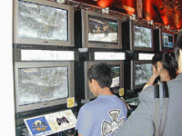
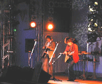

2001年10月13日
【速報】
"東京ゲームショウ2001秋"2日目開催
●もう秋だというのにすごい熱気！
2日目となる本日の天気は晴天。秋だというのに朝から気温が高く、屋外に立っているだけで汗が出てくるような陽気でした。昨日とは違い午前から一般公開とあってか、開場と同時に場内はあっという間にいっぱいに。全国から集まってきたゲームファンの熱気で、会場内も外に負けないくらいに熱い空間になっていました。
▲開場直後の場内の様子。

▲ゲーム体験コーナーを設けていたブースはどこも大人気。
▲お目当てのグッズはゲットできたかな？
●メインステージは大盛りあがり
本日のメインステージも、客席は大勢の観客で埋め尽くされました。11時30分から行われたヤマハ"デジタルDJパフォーマンス"では、ヤマハの最新デジタル楽器でのデモンストレーションのほか、インターネットオーディション"Music Front"にて選ばれた勝ち取ったウェルテル、歌姫楽団の樋口舞さんのライブがあり、来場者もそのパフォーマンスに目を奪われていました。

▲ウェルテルは弾き語りで観客を魅了。
13時からスタートしたメディアワークスによるラジオ『シスタープリンセス お兄ちゃんといっしょ』の公開録音では、同番組のパーソナリティーを務める声優が勢ぞろい。新作の発表だけではなく、桑谷夏子さん、望月久代さん、小林由美子さん、水樹奈々さんによって結成された新ユニット"prits"の紹介などが行われました。
▲モニターに新作情報が映し出されたとたん、大きな歓声が上がりました。
▲パーソナリティーの声優4名によるトークに観客は大興奮。
そして、14時からは恒例となった"危険なクリエイタートークバトル"。今回は、アトラスの岡田耕始氏、ソニックチームの中裕司氏、カプコンの稲船敬二氏の3人が登場し、司会の電撃王編集長、塚田正晃氏と軽快なトークを交ぜながら、それぞれの手掛ける最新作などについて語りました。また、話題が各ハードでソフトを作るときの苦労話に移ると、3人それぞれがとてもここではかけないようなギリギリ発言を連発。まさに"危険なトークバトル"のタイトルにふさわしい（？）イベントとなりました。
▲有名クリエイターのトークを聞こうと、メインステージにはたくさんの人、人、人！
この日の入場者数は48,059名でした。明日10月14日はいよいよ"東京ゲームショウ2001秋"最終日。明日も盛りだくさんの展示やイベントで皆様をお待ちしていますので、みなさま是非おこしください。
<<10月12日
10月14日>>
<<戻る
社団法人コンピュータエンターテインメントソフトウエア協会（CESA）
東京ゲームショウ事務局
問い合わせ先：
info@cesa.or.jp
掲載された画像その他の内容の無断転載はお断りいたします。
当ホームページで公開された商品名は一般に各社の登録商標です。